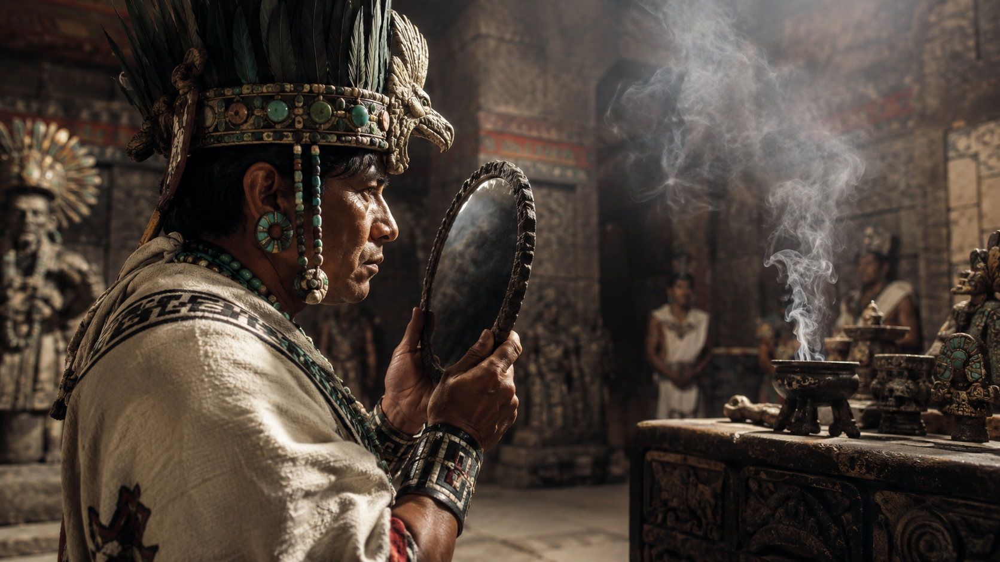
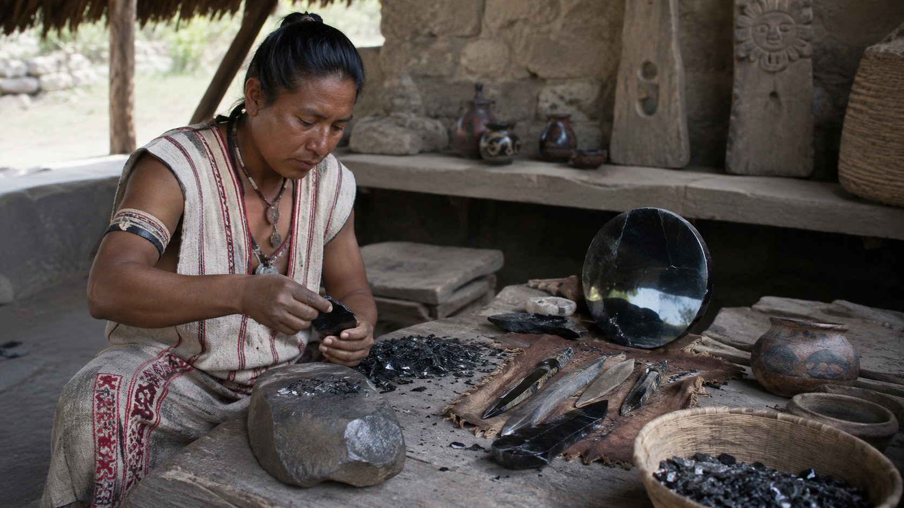
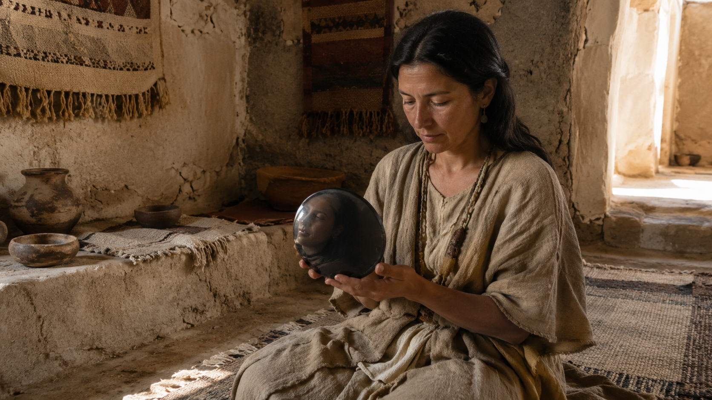
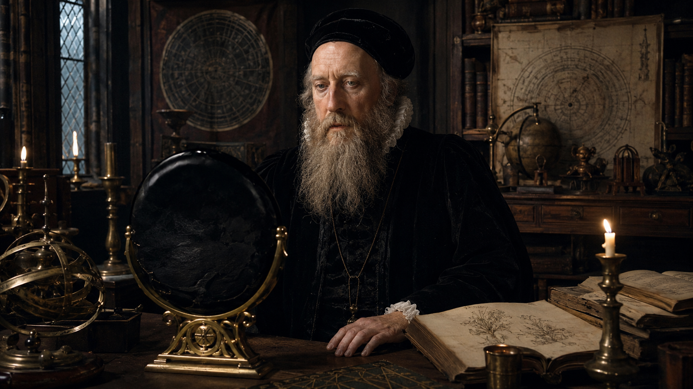
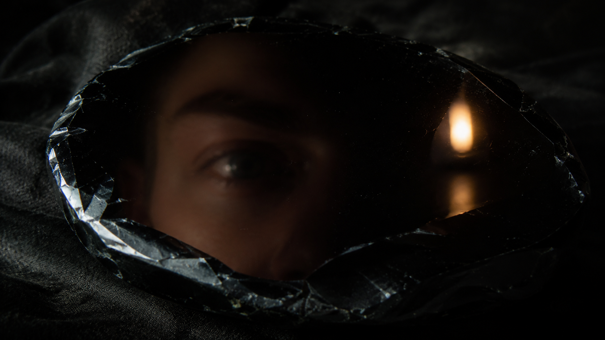

Obsidian, the Volcanic Stone of Vision, Shadow, and Hidden Power
Obsidian is not merely a stone. It is fire arrested at the threshold of form. It is lava that never became crystal, flame that cooled too quickly to arrange itself into the ordinary geometry of minerals. Born from volcanic eruption, obsidian is natural glass: a dark, vitreous substance formed when silica-rich magma cools so rapidly that crystals have no time to grow. In geological terms, it is a congealed liquid. In esoteric terms, it is frozen eruption, a memory of the underworld sealed into a mirror-black body.
This is why obsidian has always carried a strange authority. It belongs neither fully to stone nor glass, neither to earth nor fire, neither to weapon nor mirror. It cuts, reflects, conceals, reveals, protects, and wounds. It is an object of the threshold.
To hold obsidian is to hold a paradox: the blackness of the abyss with the shine of vision. It does not glow like quartz or sparkle like gold. Its power is not decorative. Its power is confrontational. Obsidian does not flatter the eye; it interrogates it.
A Stone Born from Catastrophe
The first key to understanding obsidian esoterically is its birth. Unlike stones that slowly develop within the patience of the earth, obsidian emerges from violence, heat, rupture, and sudden cooling. It is volcanic intensity made silent.
This gives obsidian its primary occult signature: the transformation of chaos into an instrument.
Where other stones symbolize harmony, growth, abundance, or celestial order, obsidian speaks of compression, ordeal, shadow, and precision. It teaches that not all sacred things are gentle. Some are born from rupture. Some wisdom arrives not as light descending from above, but as black glass rising from below.
The ancients understood this power practically before they interpreted it mystically. Because obsidian fractures with extremely sharp conchoidal edges, it was used for cutting and piercing tools throughout the ancient world. Oregon State University notes that these fracture edges can be sharper than a razor, which explains why Stone Age peoples valued obsidian so intensely.
But the blade was only one face of obsidian. The other was the mirror.
The Oldest Black Mirrors
Long before polished metal mirrors became common, human beings looked into dark reflective stone. In Neolithic Southwest Asia, obsidian was used as early as the 8th millennium BCE to create non-utilitarian objects such as ornaments and mirrors. A 2025 archaeological study notes that these mirrors were circular, slightly convex, highly reflective, and rare, with examples found across several Central Anatolian sites including Catalhoyuk-East.
This is extraordinary. Thousands of years before philosophy produced formal theories of selfhood, consciousness, or the soul, human beings were already creating black mirrors.
A mirror is never merely a tool. It is a metaphysical event. The moment a human looks into a reflective surface, the world splits. There is the body, and there is the image of the body. There is the face, and there is the double. There is the visible person, and there is the strange other who appears only when the surface is darkened, polished, and approached.
In clear water, the self trembles. In bronze, it gleams. But in obsidian, the self appears as if summoned from night.
This may be why obsidian mirrors feel less like instruments of vanity and more like instruments of ordeal. A silver mirror returns the surface. A black mirror seems to return the hidden architecture beneath the surface.

Tezcatlipoca: Lord of the Smoking Mirror
No civilization developed the esoteric symbolism of obsidian with greater force than Mesoamerica. Among the Aztec and Nahua peoples, obsidian was connected to power, sacrifice, medicine, divination, warfare, and the gods. It was the material of blades and mirrors, of blood and vision.
The great deity most closely associated with this mystery was Tezcatlipoca, whose name is commonly rendered as "Smoking Mirror." Smithsonian Magazine notes that Tezcatlipoca was frequently depicted with mirrors that allowed him to see human thoughts and actions.
This is one of the most profound symbols in world esotericism: a god whose emblem is not a throne, sword, crown, or star, but a smoking mirror.
The mirror sees.
The smoke conceals.
The god reveals by obscuring.
Tezcatlipoca is not simply a deity of reflection. He is a deity of unstable perception. The "smoking mirror" suggests that reality is not merely seen; it is veiled, distorted, tested, and ritually entered. Vision itself becomes an ordeal. The seeker must learn to look through obscurity without mistaking obscurity for emptiness.
Through an esoteric lens, this is the power of obsidian: it does not reveal by adding light. It reveals by intensifying darkness until the eye becomes conscious of itself.

John Dee and the Aztec Mirror in Renaissance Europe
One of the most fascinating episodes in the history of obsidian concerns Dr. John Dee, the Elizabethan mathematician, astrologer, alchemist, imperial theorist, and occult philosopher. Dee was one of the great liminal figures of the Renaissance: part scholar, part magician, part political visionary, part angelic experimenter.
The British Museum holds an obsidian mirror associated with Dee. Scientific analysis using portable X-ray fluorescence indicated that the obsidian was plausibly from Pachuca, Mexico, placing it within the world of Aztec-controlled obsidian sources before such objects entered European collections. Smithsonian reports that Dee's mirror and another studied object originated in Pachuca, while other related objects came from Ucareo; both regions were under Aztec control in the early sixteenth century.
This object is staggering in its implications.
Imagine the journey: an obsidian mirror, born from Mexican volcanic glass, shaped within a Mesoamerican sacred-symbolic world, transported through the violence and commerce of conquest, and eventually entering the orbit of one of Europe's most famous occult philosophers.
Here the stone becomes a bridge between worlds: Aztec cosmology, Spanish conquest, Tudor occultism, Renaissance science, imperial imagination, angelic magic, and the modern museum.
The mirror becomes more than an artifact. It becomes a historical sigil of transmission.
Dee's magical work often revolved around communication with angelic intelligences through scrying. Whether or not this particular mirror was used in the exact manner later legend suggests, its association with Dee captures something essential about obsidian's symbolic destiny: the stone belongs wherever human beings attempt to see beyond the ordinary surface of things.

Obsidian as the Stone of the Shadow
In modern esoteric practice, obsidian is often described as a stone of grounding, protection, psychic cleansing, and shadow work. These associations are not random. They arise naturally from the stone's physical and mythic properties.
Obsidian is black, reflective, volcanic, sharp, and glass-like. Each quality has a symbolic correspondence.
Blackness gives it the character of the unknown, the womb, the cave, the night sea, the unconscious, the prima materia.
Reflectivity gives it the character of revelation, divination, self-confrontation, and the double.
Volcanic origin gives it the character of subterranean force, passion, suppressed heat, and chthonic emergence.
Sharpness gives it the character of cutting, severing, discernment, sacrifice, and truth.
Glassiness gives it the character of liminality: solid yet once-fluid, opaque yet reflective, earthly yet strangely artificial-looking.
Thus obsidian is not simply "protective" in the soft sense. Its protection is severe. It protects by revealing what must be faced. It cuts illusion from perception. It draws hidden material upward. It is not a comforting stone. It is a diagnostic stone.
Where rose quartz may soothe the heart, obsidian may expose the wound beneath the heart. Where amethyst may elevate the mind, obsidian may pull the mind down into the cave where its forgotten images live.
This is why obsidian must be treated with respect. Esoterically, it is not a trinket of darkness. It is a ritual instrument of encounter.

The Black Mirror and the Architecture of Perception
The deepest mystery of obsidian is not that it reflects the world. It is that it changes the way reflection itself is understood.
A normal mirror tells us, "Here is what you look like."
An obsidian mirror asks, "Who is the one looking?"
This shift is subtle but enormous. The esoteric function of obsidian is not merely visual. It is phenomenological. It bends consciousness back upon itself. It forces the observer to become aware of the act of observing.
When a person gazes into black reflective glass, the image is dim. The surface does not immediately surrender clarity. The eye must adjust. The imagination begins to participate. The boundary between reflection, memory, intuition, and projection becomes unstable.
This is why black mirrors have been used in scrying traditions. The power is not necessarily that the mirror "contains" visions like a picture frame. Rather, it creates a threshold condition in consciousness. It weakens the tyranny of ordinary sight. It allows symbolic perception to rise from beneath literal perception.
In this sense, obsidian is not a window into fantasy. It is a technology of ambiguity.
And ambiguity is sacred when properly held.
The rational mind demands clean edges. The imaginal mind learns to see in smoke. Obsidian trains the second sight not by rejecting reality, but by revealing that reality is layered. The visible world is not false; it is incomplete. The surface is real, but it is not the whole.
The Blade and the Mirror
Obsidian's two great historical forms are the blade and the mirror. This duality is crucial.
The blade cuts outward.
The mirror cuts inward.
The blade opens flesh.
The mirror opens perception.
The blade separates body from body.
The mirror separates the self from its mask.
This is the secret of obsidian: it is a stone of incision. Sometimes the incision is physical, as in the ancient tool or ritual blade. Sometimes it is psychic, as in the black mirror that cuts through illusion. Sometimes it is spiritual, as in the moment a person sees their own shadow clearly enough to stop being ruled by it.
Obsidian is therefore a stone of sacred severity.
It does not merely absorb negativity. That popular phrase is too passive. Obsidian exposes the hidden contract by which negativity survives. It asks: What are you feeding? What fear have you mistaken for identity? What wound have you enthroned as destiny? What ancient smoke still clouds the mirror?

Obsidian and the Underworld Current
In many esoteric systems, the underworld is misunderstood as merely a place of punishment or death. More deeply, it is the hidden interior of reality: the root-world, the ancestral chamber, the buried memory, the place where forms dissolve before they are remade.
Obsidian belongs to this current. Its volcanic origin links it to the inner earth, to magma, pressure, and eruption. Its blackness links it to the unseen. Its reflective quality links it to the soul-image. Its sharpness links it to sacrifice and transformation.
Thus, obsidian may be read as a material emblem of descent.
To work with obsidian is to enter the cave with a mirror instead of a torch. This distinction matters. A torch conquers darkness by illumination. A mirror enters darkness by relationship. It does not destroy the dark; it listens to it.
This is a more advanced esoteric posture. Not all darkness is evil. Some darkness is gestational. Some darkness is protective. Some darkness is the necessary veil around mysteries that would be profaned by premature exposure.
Obsidian teaches the difference between shadow as corruption and shadow as depth.
A Stone for the Age of Illusion
Obsidian may be especially significant in the modern age because we live inside manufactured reflection. Screens, cameras, algorithms, avatars, feeds, profiles, and digital doubles now surround the human psyche. We are reflected constantly, but rarely revealed.
The modern person sees their image everywhere and their essence almost nowhere.
In this context, obsidian becomes a counter-technology. It is the anti-screen. It does not entertain. It does not scroll. It does not flatter. It does not optimize the self for display. It returns the gaze to the abyss behind the image.
A polished obsidian mirror is not bright enough for narcissism. It is too dark for vanity. It gives just enough reflection to summon the question, but not enough to satisfy the ego.
That is its medicine.
It reminds us that perception is not passive. Seeing is an initiation. Every act of sight contains a hidden metaphysics. What we see depends on what we are prepared to confront.
The Esoteric Significance of Obsidian
Obsidian's significance can be summarized through seven powers:
1. The Power of Descent
Obsidian draws consciousness downward into root, shadow, ancestry, instinct, and buried truth.
2. The Power of Severance
Its blade-like nature symbolizes cutting cords, illusions, attachments, and false reflections.
3. The Power of Reflection
As a black mirror, it reveals not only appearances but the hidden observer behind appearances.
4. The Power of Protection
Its protection is not sentimental. It guards by exposing what is concealed and sharpening awareness.
5. The Power of Volcanic Memory
Obsidian carries the signature of fire, pressure, eruption, and sudden transformation.
6. The Power of the Threshold
It stands between stone and glass, earth and fire, tool and talisman, surface and depth.
7. The Power of the Smoking Mirror
It teaches that true vision may arrive through obscurity, symbol, shadow, dream, and disciplined ambiguity.
Conclusion: The Stone That Looks Back
Obsidian is the black witness of the earth. It is what happens when fire becomes still enough to reflect. It is the underworld learning to see.
Its history runs from Neolithic Anatolian mirrors to Mesoamerican divine symbolism, from Aztec sacred objects to the occult imagination of Renaissance Europe. It has served as blade, ornament, mirror, offering, tool, weapon, and portal. Across these uses, one theme remains constant: obsidian intensifies the boundary between the visible and the invisible.
It is not a stone of easy answers. It is a stone of dangerous clarity.
To approach obsidian esoterically is to understand that darkness is not always the absence of vision. Sometimes darkness is the medium through which deeper vision becomes possible. Sometimes the black mirror does not show us another world because it first demands that we recognize the unknown world inside ourselves.
Obsidian does not simply reflect the face.
It reflects the hidden force behind the face.
And for those willing to look without turning away, the stone becomes what it has always been: a frozen flame, a blade of night, a mirror of the abyss, and one of the oldest instruments by which humanity learned that seeing is not merely an act of the eyes, but an initiation of the soul.
